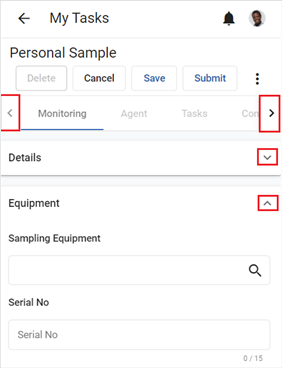

The various sections of a record can be expanded or collapsed using the Expand/Collapse button at the top right of each section. Scroll down to view additional sections.
If the record contains tabs, they will display at the top of the screen. Click a tab to open it, or use the right/left arrows to view additional tabs.
